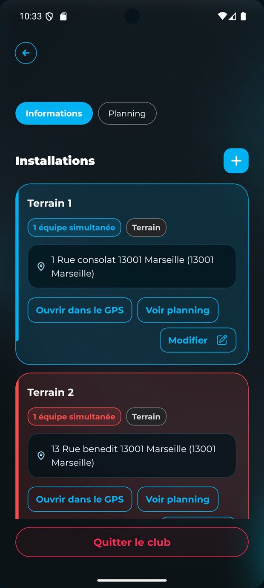
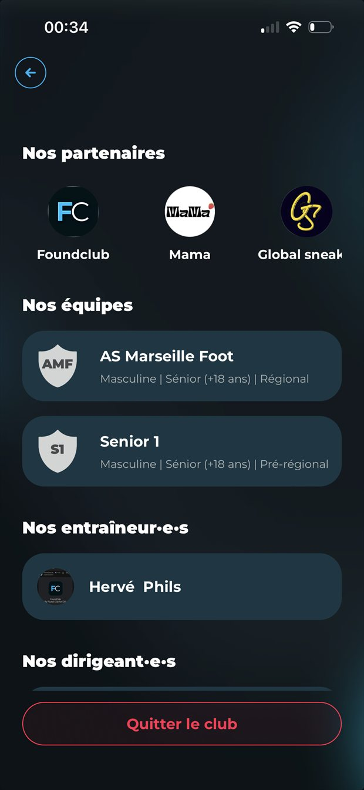
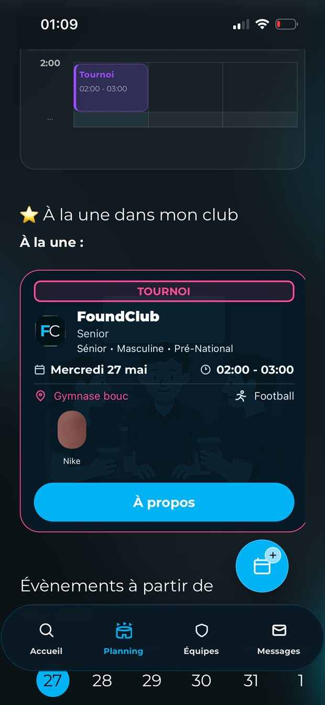
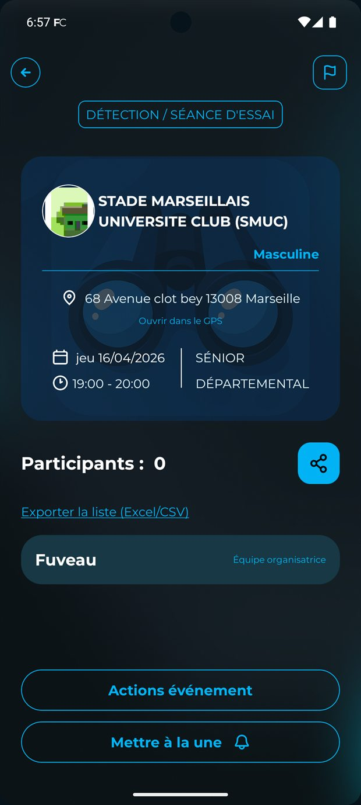
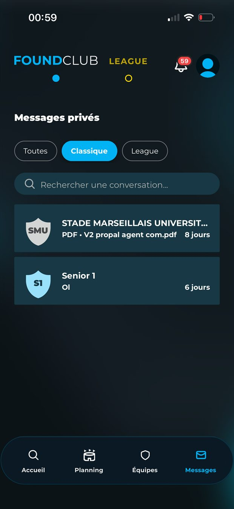
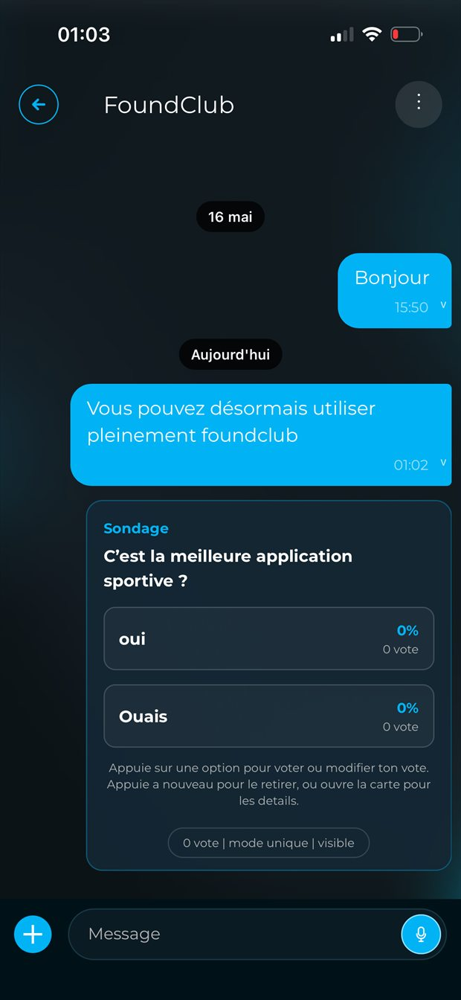
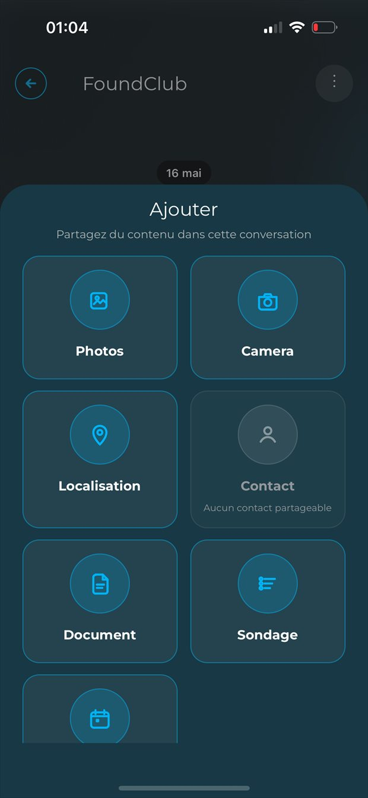

Page produit club
Le logiciel club FoundClub montre enfin la réalité du terrain.
FoundClub Pro ne vend pas une promesse abstraite. Cette page s'appuie sur les vrais écrans du produit pour montrer comment un club peut gagner en visibilité, structurer ses équipes et piloter ses opérations.

Visibilité club
Rendre le club trouvable, puis transformer cette découverte en parcours utile.
Sponsors, informations club, résultats de recherche et pages locales servent à faire entrer les bonnes personnes dans votre univers FoundClub.
Recherche club, fiche visible et club mieux présenté.
- Recherche club publique Un joueur peut filtrer les clubs autour de lui sans quitter l'univers FoundClub.
- Club plus lisible Sponsors, recherche locale et éléments d'identité rendent la structure plus claire dès la première visite.
- CTA web cohérents Les bons parcours mènent ensuite vers la gestion club, le planning ou l'organisation événement.


Planning et installations
Voir toute la semaine, lire les conflits et passer au détail installation sans changer d'outil.
Le planning et les installations restent dans la même lecture.
- Créneaux par semaine
- Filtre par installation
- Occupations et capacité
- Vue mobile et web
FoundClub aide à piloter les entraînements, les stages, les réservations et les chevauchements. Le produit montre exactement comment les terrains et salles sont utilisés au quotidien.

Demandes, équipes et affiliations
Structurer les équipes, rattacher les coachs et traiter les demandes d'affiliation dans le même flux.
Le pilotage club garde les bonnes actions au même endroit.
- Hub dirigeant L'accueil club rassemble demandes, annonces, événements et cotisations sans disperser l'information.
- Équipes et besoins Le produit garde la logique d'équipes, de publication et d'organisation dans le même cockpit.
- Vue club consolidée Sponsors, planning, événements à la une et CTA utiles restent lisibles au même endroit.

Événements
Publier une détection, un stage, un tournoi ou un match amical comme un vrai objet d'organisation.
Le flow événement couvre la création et la lecture terrain.
- Création guidée Équipe, audiences, invitations, logistique, récapitulatif et paramètres de visibilité.
- Détail événement Participants, état de réponse, informations rapides et tâches liées à l'événement.
- Usage club Détections, stages, tournois et matchs amicaux trouvent tous leur place sans détour.


Messagerie et cotisations
Parler au bon groupe, relancer les membres et suivre la vie du club sans repartir dans des outils parallèles.
La gestion continue dans la conversation et l'administratif.
- Messagerie contextuelle Les conversations restent liées aux équipes, événements et besoins réels du club.
- Cotisations et relances FoundClub aide à visualiser les campagnes et à pousser les bonnes actions au bon moment.
- Pages produit connectées Messagerie, cotisations et gestion club renvoient toutes vers la web app FoundClub.




Prêt à brancher votre club sur FoundClub ?
On peut commencer par l'annuaire, la page club, le planning ou l'organisation d'événements. L'essentiel est d'ouvrir un vrai parcours FoundClub, pas une vitrine déconnectée du produit.